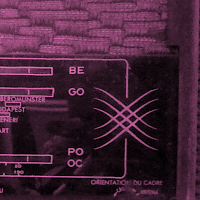
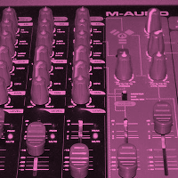

-

Caption One.
-
 Caption Two.
Caption Two. -

Caption Three.
La Musique Libre ne peut se concevoir en utilisant des outils de production propriétaires. Par conséquent, nous n'utilisons que des logiciels libres, que ce soit pour l'enregistrement, le mixage ou les codecs de nos fichiers audio.
Nous documentons les outils et méthodes que nous employons, pour que d'autres puissent s'en inspirer, produire et diffuser.
Quand les grosses sociétés de production auront fini de poser leur copyright sur tout ce qu'elles peuvent, il ne restera que la Culture Libre.
Faites du Libre, tout à fond.